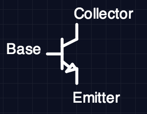
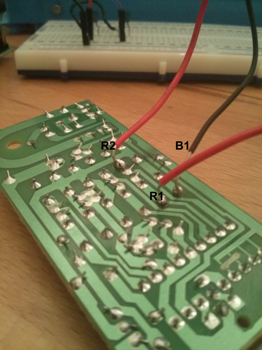
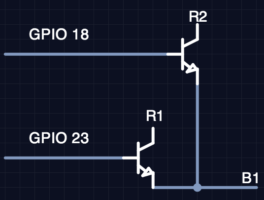

The Internet of Things.
For far too long humans having been hogging all the internet to themselves. It is time to change that. Now that the future is here we can start connecting everything we own, allowing the world of buggy software to permeate deeper into our lives.
Overview
Here I will be showing you how to turn on and off a lamp from anywhere in the world. However, you can control any device that works by toggling its power source, such as a fountain, TV, Christmas tree lights, projector, etc.
Required Hardware
- Raspberry Pi
- Internet Connection (Ethernet or WiFi)
- Device Under Control (Lamp in my case)
- Remote Controlled Outlets (I used these.
*)
- 6 2N2222A Transisitors (Here's 100 of them
*)
- Jumper wires and breadboard
- Soldering Iron
* affiliate links
Our goal it to hack into the remote that controls the outlet, allowing us to toggle the buttons with the Raspberry Pi's GPIO pins. Check out my page on hardware control for more information about GPIO pins. We will then set up a simple webserver with Flask to allow remote control of the outlets from anywhere with a web connection.
Hacking into the Remote
To open up the remote I first had to remove the battery cover and undo one screw. Once this was done I was able to pry the two covers apart using a flat head screwdriver. With the plastic gone, you can see the simple through-hole circuit board. See below for a picture of the front and back. (Ignore the wires for now, I forgot to take a picture before I soldered them on.)


As you can see in the first picture, there are two rows of buttons - an on and off button for each of the three outlets. Our goal is to control those buttons with the Raspberry Pi. We can accomplish this with a circuit element known as a transistor. Basically, a transistor is just a switch that can be controlled with a computer, which is exactly what we need.
2N222A Transistor
The specific transistor I will be using here is the infamous 2N222A. All 2N222A transistors have three pins. Two of the pins are inserted in series into your circuit, and the third pin controls if the transistor conducts current (closed switch) or does not conduct current (open switch). To close the switch and allow current to flow, this third control pin needs to be raised high. To open the circuit and stop current, the control pin should be set low. The circuit diagram symbol for transistors is shown below:

The collector is where current should flow in and the emitter is where current should flow out. The base pin is the control pin I mentioned above, which is used to control the state of the transistor (conducting or not conducting). The arrow drawn on the symbol indicates the direction of current flow. You can read more about the specifics of the 2N222A in the datasheet (PDF).
To identify which pin is which, hold the transistor with the flat side facing you. The left pin is the emitter, the middle pin is the base, and the right pin is the collector.
Our goal is to use the transistor to bridge the same gap as the buttons on the remote, so that applying a voltage to the base pin on the transistor will close the circuit just as pressing the button would. In this way we are able to simulate a button press without knowing anything at all about the circuit the buttons are a part of.
Time to Solder Things
The first step is to solder wires to each side of the buttons. Here I am only going to connect up two of the buttons (on and off for outlet 1) but you can follow the pattern and connect up all six. In the picture below I've labeled the three places you will need to solder cabled to.

Solder wires to the positions indicated above so it is easier to connect this remote to a breadboard. Once this is done connect the wires across a transistor using your breadboard. See below for a circuit diagram
While not captured in this photo, you will also need to solder a wire to the ground terminal and connect that to the ground of the Raspberry Pi. You can see this ground connection in the finished photo below.

Now all we have to do is connect a GPIO pin from the Pi to the base of each transistor. Here I am using GPIO pins 18 and 23. You can see a photo of this whole setup below.

Software
The next step is to use Flask to expose our new circuit to the internet. I will be using my hardware control library RobotBrain to simplify the code. Here I'll show the code in its entirety and then point out the important bits.
There are only two files. lamp_control.py and templates/main.html
(note that main.html needs to be in a directory called templates)
If you'd rather git pull than copy/paste you can find all the code on
github.
lamp_control.py
import time
from itertools import cycle
from flask import Flask, render_template
from robot_brain.gpio_pin import GPIOPin
app = Flask(__name__)
on_pin = GPIOPin(18)
off_pin = GPIOPin(23)
state_cycle = cycle(['on', 'off'])
@app.route("/")
@app.route("/<state>")
def update_lamp(state=None):
if state == 'on':
on_pin.set(1)
time.sleep(.2)
on_pin.set(0)
if state == 'off':
off_pin.set(1)
time.sleep(.2)
off_pin.set(0)
if state == 'toggle':
state = next(state_cycle)
update_lamp(state)
template_data = {
'title' : state,
}
return render_template('main.html', **template_data)
if __name__ == "__main__":
app.run(host='0.0.0.0', port=80)
Here we are using Flask to respond to HTTP requests. Whenever the root URL or
an immediate subdirectory of root is requested, the update_lamp() function
is called. If any subdirectory is requested, the name of that subdirectory is
fed as an argument to the function. For example, if <my-ip>/foo is requested,
Flask will call update_lamp('foo') and respond with whatever the function
returns. The update_lamp() function checks for one of three states (on,
off, or toggle) and performs the desired behavior.
templates/main.html
<!DOCTYPE html>
<head>
<title>{{ title }}</title>
<style type="text/css">
body {
padding: 0;
margin: 0;
}
.large_button {
position: absolute;
width: 100%;
height: 50%;
text-align: center;
text-decoration: none;
font-size: 1000%;
}
#on {
background-color: #fbf09a;
color: rgb(223, 204, 103);
text-shadow: 1px 1px 10px #5C4E17;
}
#off {
background-color: #1e170b;
top: 50%;
color: rgb(83, 71, 48);
text-shadow: 1px 1px 10px #000000;
}
</style>
</head>
<body>
<h1>
<a href="/on" id="on" class="large_button">ON</a>
</h1>
<h1>
<a href="/off" id="off" class="large_button">OFF</a>
</h1>
</body>
</html>
This is the template that is rendered by the above Flask function. When rendered it looks like this:

To start the server simply run the script with root privileges (GPIO access needs root):
sudo python lamp_control.py
Now just navigate to your Pi's IP address and you should be able to control the lamp!
NOTE: I am not a Flask or web design expert, so I might not be doing things the correct way. But it wouldn't be hacking if we knew what we was doing all the time, would it?
Conclusion
I usually run the script with screen so I can reconnect later. I've also added an Android homescreen shortcut that links to the toggle URL so I can easily control the light from my homescreen.
In the end I was pretty happy with how simple this turned out to be. If you follow these instructions and connect one of your devices to the internet, I'd love to hear about it! You can reach me on twitter @jackminardi.